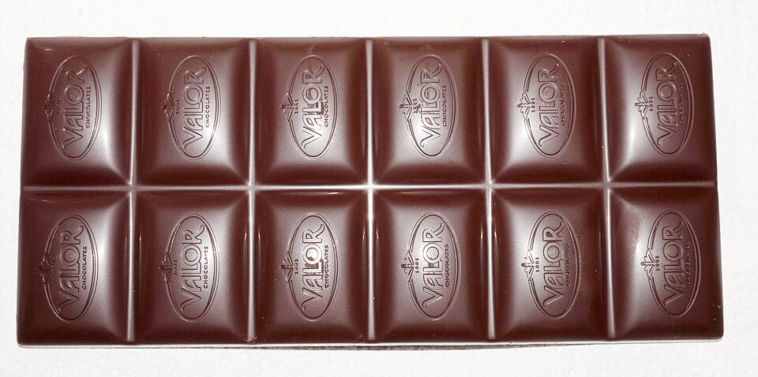

Doces
Musse Bis

Ingredientes
- 1 envelope de gelatina sem sabor
- 3 colheres (sopa) de água
- 1 caixa de chocolate tipo Bis sabor laranja
- 1 lata (medida) de leite
- 1 lata de leite condensado
- 1 lata de creme de leite
Modo de preparo
- Hidrate a gelatina na água 5 minutos e dissolva em banho-maria.
- Bata todos os ingredientes no liquidificador, distribua em taças e gele 3 horas.
Observação
Use a lata vazia do leite condensado para medir o leite.